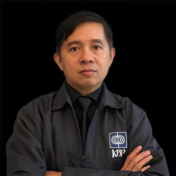
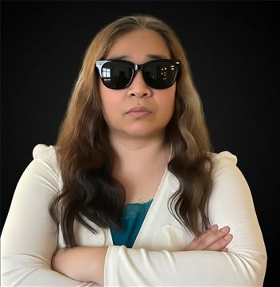
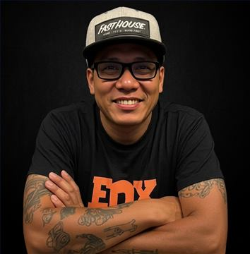
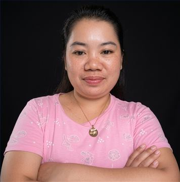
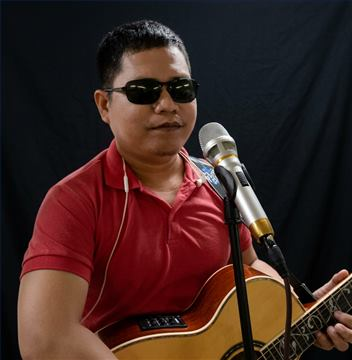

THE VOICES OF FMC
Black Shadow
Washington, DC, USA
FILIPINO VOICES. WORLDWIDE CONNECTIONS.
A little closer to home, wherever you are.
Tune in to Filipino Music Central.
Press play and make yourself at home.
GOOD MUSIC. GREAT COMPANY.
Discover the voicesFROM OUR HOME TO YOURS

Washington, DC, USA
Cavite, Philippines
Jacksonville, FL, USA
FRIENDSHIP STARTED IT ALL
FMC began with a friendship between online DJs and a shared idea: bring people together through music, wherever they call home.
Launched on August 30, 2019, Filipino Music Central grew from the Friendship Broadcasting Network. Our voices reach beyond borders, connecting listeners in the Philippines and around the world.
Your home. Your music. Your life.
JOIN THE COMMUNITYTHERE'S A PLACE FOR YOU HERE
Say hello, share where you're listening from, or catch up with the FMC community.
FIND US ON FACEBOOKOpen FMC's existing public chat to read along or join the conversation.
MANY PLACES. ONE FMC.
Meet the voices that make
Filipino Music Central feel like home.
Washington, DC, USA
Jacksonville, FL, USA
CamSur, Philippines
Davao, Philippines

Canada
Cavite, Philippines
Taiwan
Singapore
Norway

TPPFM · Cambodia
Los Angeles, CA, USA
CamSur, Philippines
Davao, Philippines

Kuwait

Tagbilaran City, Philippines
Arizona, USA
WHEREVER LIFE TAKES YOU
FMC is just a play button away.
Our Partners
LET'S KEEP IN TOUCH
Follow the music, meet the community, and stay connected with FMC.